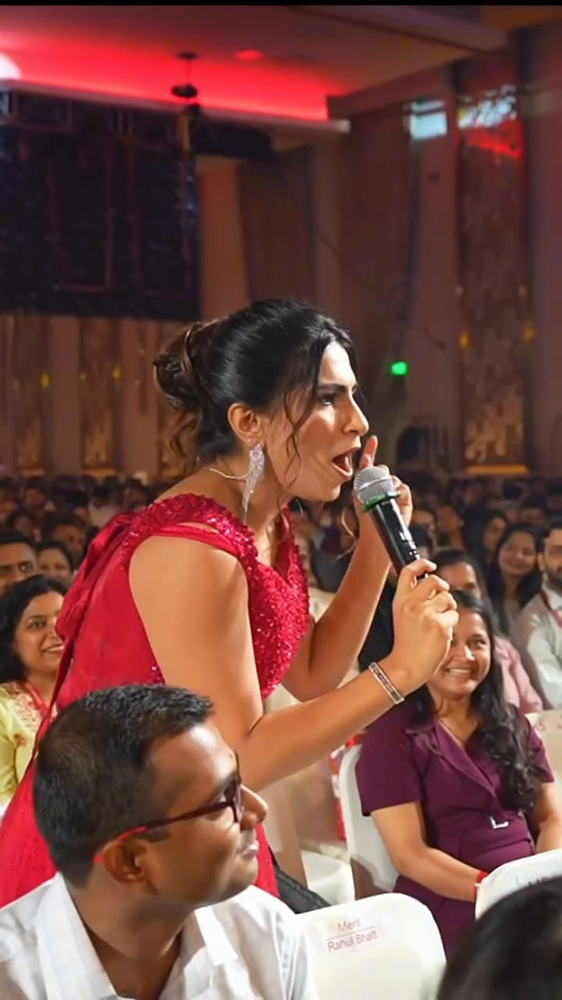
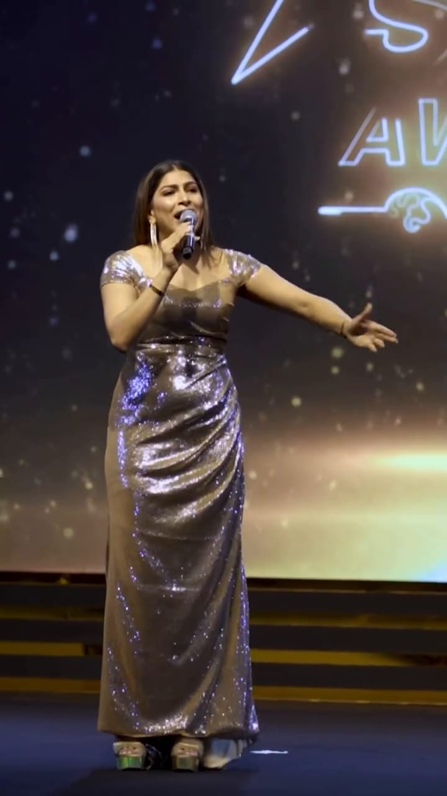
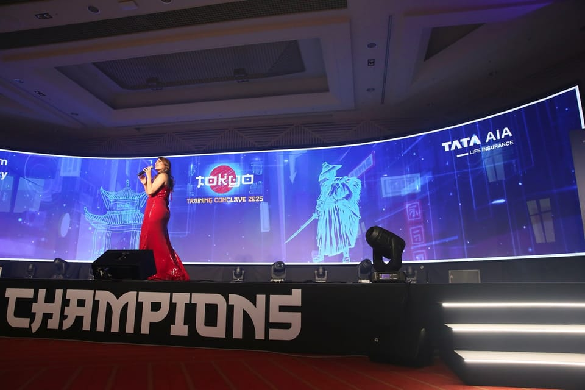

She opens the room
Before anyone else, give yourselves the loudest round of applause for making it here this evening.
Plays silent until someone has listened for a music bed; her opening lines are on screen in her original edit.
Draft copyCounts to confirm
Awards nights, R&R evenings and galas, in Mumbai, Jaipur, Tokyo, Macao and beyond.

Draft copy
Before anyone else, give yourselves the loudest round of applause for making it here this evening.
Plays silent until someone has listened for a music bed; her opening lines are on screen in her original edit.
Datamatics: she bends to hand the mic to a seated guest.
Himalaya Star Awards, Jaipur, 2025: guests cheering with arms up; dancing on the floor.

TATA AIA Life in Tokyo (2025); Pidilite Chairman's Club in Macao (2024); R&R nights in Istanbul, Dubai, Cape Town and Pattaya.

ICICI Prudential Life: first show in 2017, Awards Night in 2024.
Clips from her own posts. Silent unless marked; select a clip to play it.

Annual Achievers Awards
Jio World Convention Centre, Mumbai, India · Year to confirm · Role: Host


Awards Night 2024, and a relationship since 2017
JW Marriott Sahar, Mumbai, India · 2017–2024 · Role: Host

No client testimonials have been collected yet. Nothing here is invented.
Cue cards are visible in her work across a decade; she describes scripting and "homework" before shows.
Her own account of ICICI Prudential Life's 2021 virtual awards: a downpour, setup issues and many last-minute changes.